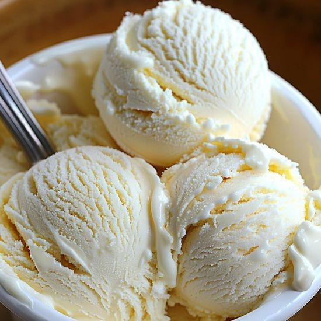

Bata o creme de leite até formar chantilly firme (picos suaves).
Adicione o doce de leite, e o sal. Misture delicadamente com espátula, de baixo para cima, para não perder o ar. (Sim, o sorvete precisa um pouco de ar para ficar cremoso, mas não é o principal)
Transfira para pote com tampa. Pressione filme plástico diretamente sobre a superfície para evitar cristais, agora vá intercalando uma parte do creme de sorvete e uma parte da calda de caramelo salgada.
Leve ao freezer por no mínimo 6 horas ou 8 horas (ou de um dia para o outro).
